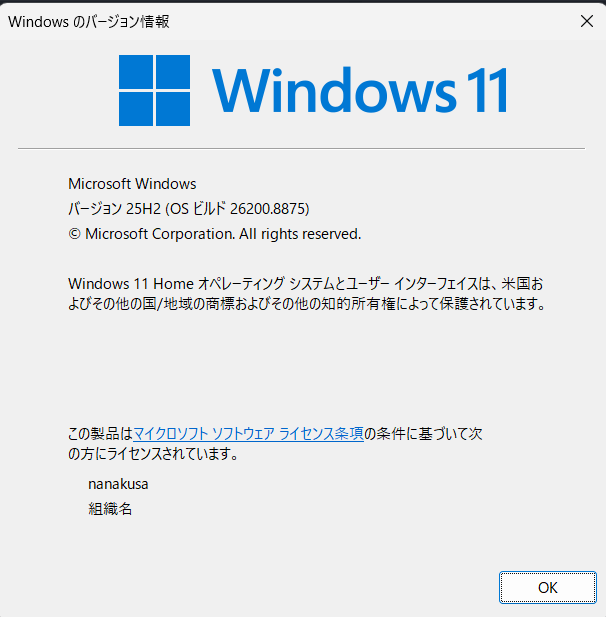

Windowsの詳細なバージョン情報を確認する手段をメモする．
verコマンド
windowsに標準で搭載されている ver コマンドを使用することで，CUIを通じてWindowsのバージョンを確認することができる．
Microsoft Windows [Version 10.0.26200.8875]
(c) Microsoft Corporation. All rights reserved.
C:\Users\nanakusa>ver
Microsoft Windows [Version 10.0.26200.8875]Get-CmiInstance
Powershellで Get-CmiInstance を実行することで，Windowsのバージョンを始めとする情報を確認することができる．
SystemDirectory Organization BuildNumber RegisteredUser SerialNumber Version
--------------- ------------ ----------- -------------- ------------ -------
C:\Windows\system32 26200 nanakusa xxxxx-xxxxx-xxxxx-xxxxx 10.0.26200Get-ComputerInfo を使えば，より詳細な情報を確認することができる．
winver.exe
winver.exeを起動することで，GUIを通じてWindowsのバージョンを確認することができる．

他にもいくつか方法があるようだが，いったんここまでとする．